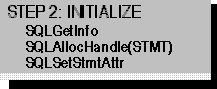

The second step is to initialize the application, as illustrated in the following figure. Exactly what is done here varies with the application.

At this point, it is common to use SQLGetInfo to discover the capabilities of the driver. For more information, see “Considering Database Features to Use” in Chapter 16, “Interoperability.”
All applications need to allocate a statement handle with SQLAllocHandle, and many applications set statement attributes, such as the cursor type, with SQLSetStmtAttr. For more information, see “Allocating a Statement Handle” and “Statement Attributes” in Chapter 9, “Executing Statements.”